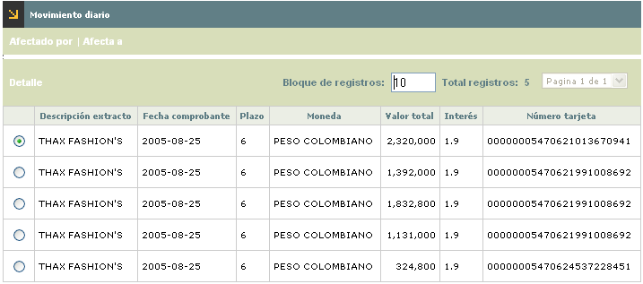
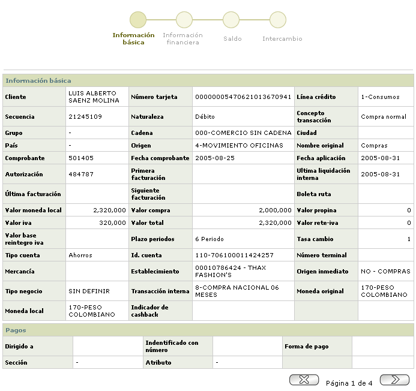
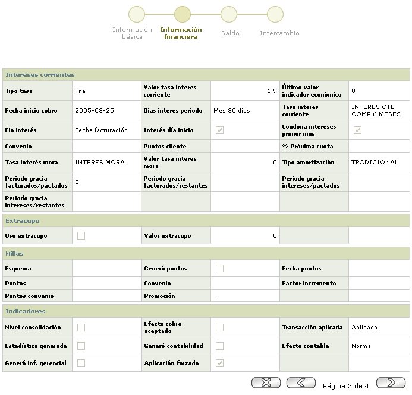
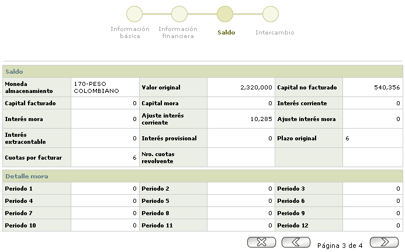
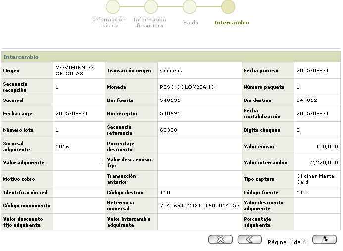
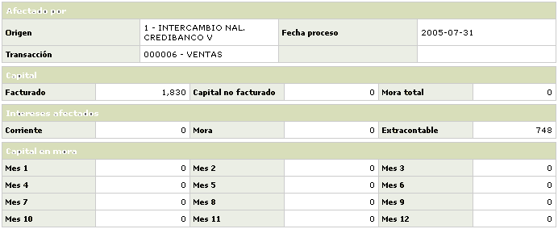
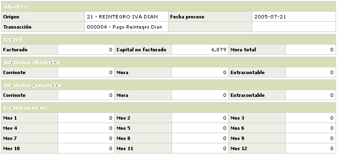

Consulta global de intercambio |
Movimiento diario: En este formulario aparecen registradas todas las transacciones que han superado exitosamente las validaciones del sistema.
El formulario contiene las opciones Afectado_por, Afecta a, y el Detalle. Adicionalmente, cuenta en la parte superior con un botón para volver al formulario principal de la Consulta global de intercambio
.

Descripción extracto |
Despliega el nombre con el que aparecerá la transacción en el extracto del cliente y corresponde al nombre de la transacción interna definido en la opción Transacciones por empresa. |
Fecha comprobante |
Campo con formato YYYY-MM-DD ilustra la fecha física del comprobante de venta. |
|
Plazo
|
Contiene el número de periodos de 30 días, solicitado por el cliente o asignado por defecto, para el pago de la transacción de consumo o utilización. |
Moneda |
Despliega la abreviatura definida por la franquicia que identifica la Moneda original de la transacción. |
Valor total |
Campo que contiene el monto global de la transacción, incluido el valor de propina concedida. |
Interés
|
Contiene la tasa de interés corriente original asociada al indicador económico que aplica para la transacción.
|
Número tarjeta |
Campo que contiene bien sea el número de la tarjeta a afectar con la transacción o el número de identificación del cliente. |
Detalle: Si el usuario invoca la opción Detalle se despliega el siguiente formulario, con un wizard de cuatro pasos.




Afectado por: Aplica para las transacciones de consumo y permite visualizar los diferentes pagos que han disminuido o cancelado los diferentes saldos presentados por la transacción consultada.

Fecha
|
Contiene la fecha en se aplicaron cada una de las diferentes transacciones de pago. |
Secuencia |
Muestra el número asignado por el sistema a cada transacción de pago y que la identifica de manera exclusiva dentro del sistema. |
Capital |
Valor que consolida los montos contenidos dentro del bloque Capital y cubiertos por cada uno de los pagos realizados. |
Interés |
Corresponde al valor que consolida los montos contenidos dentro del bloque Intereses y cubiertos por cada uno de los pagos efectuados. |
Detalle: Si el usuario invoca la opción Detalle se despliega el siguiente formulario:

| Origen
|
Despliega el nombre de la fuente y origen del movimiento a través del que ingresa la transacción. |
Fecha de proceso |
Contiene la fecha en se aplicaron cada una de las diferentes transacciones de pago. |
Transacción |
Muestra el nombre de la transacción interna asociado en la opción Transacciones por empresa. |
Capital: Desglosa para cada concepto, el valor del capital que está siendo cubiertos por cada uno de los pagos realizados.
Facturado |
Muestra la porción del diferido de la transacción que ha sido cubierta mediante cada uno de los pagos efectuados. |
Capital no facturado |
Indica el valor que ha sido cubierto por cada uno de los pagos, correspondiente al saldo de capital de la transacción que se encuentra pendiente por cancelar o diferir. |
Mora total |
Campo que contiene el monto acumulado de los diferidos de la transacción de faturaciones anteriores no cubiertos y que han sido cancelados por cada uno de los pagos efectuados. Este campo agrupa los capitales mostrados por altura dentro del bloque Capital en mora. |
Interés: Desglosa por cada concepto, el valor de los intereses que están siendo cubiertos por cada uno de los pagos realizados.
Corriente |
Campo que muestra el valor cubierto por cada uno de los pagos y correspondiente al monto resultante de la liquidación del beneficio esperado por la entidad sobre el saldo del capital vigente de la transacción. |
Mora |
Indica el valor cubierto por cada uno de los pagos y correspondiente al monto resultante de la liquidación del beneficio adicional esperado por la entidad sobre el saldo del capital que se encontraba en mora de la transacción. |
Extracontable |
Señala el valor cubierto por cada uno de los pagos y correspondiente al monto resultante de la liquidación del beneficio esperado por la entidad sobre el saldo del capital de la transacción cuya altura de mora superaba los 90 días. |
Capital en mora: Grupo de campos que permiten visualizar la descomposición del capital en los doce últimos periodos cubiertos o cancelados por cada uno de los pagos realizados.
Mes 1 ...12 |
Estos campos contienen la porción del saldo por capital de la transacción acorde a la altura de mora o facturaciones que hayan tenido lugar y cuyos pagos mínimos no hayan ocurrido, valores que están siendo cubiertos por cada uno de los pagos realizados. |
Afecta a: Permite visualizar la incidencia de una transacción de pago sobre las transacciones de consumo realizadas por el cliente.
Fecha |
Contiene la fecha en se aplicaron cada una de las diferentes transacciones de pago. |
Secuencia |
Muestra el número asignado por el sistema a cada transacción de pago y que la identifica de manera exclusiva dentro del sistema. |
Capital |
Valor que consolida los montos contenidos dentro del bloque Capital y cubiertos por cada uno de los pagos realizados. |
Interés |
Corresponde al valor que consolida los montos contenidos dentro del bloque Intereses y cubiertos por cada uno de los pagos efectuados. |
Detalle: Si el usuario invoca la opción Detalle se despliega el siguiente formulario:

Origen |
Despliega el nombre de la fuente y origen del movimiento a través del que ingresa la transacción. |
Fecha de proceso |
Contiene la fecha en se aplicaron cada una de las diferentes transacciones de pago. |
Transacción |
Muestra el nombre de la transacción interna asociado en la opción Transacciones por empresa. |
Capital: Desglosa para cada concepto, el valor del capital que está siendo cubiertos por cada uno de los pagos realizados.
Facturado |
Muestra la porción del diferido, de cada una de las transacciones de consumo involucradas, que ha sido cubierta mediante el pago efectuado. |
Capital no facturado |
Contiene el valor que ha sido cubierto por el pago, correspondiente al saldo de capital de cada una de las transacciones, que se encuentra pendiente por cancelar o diferir. |
Mora total |
Indica el monto acumulado, para cada una de las transacciones de consumo, de los diferidos de facturaciones anteriores no cubiertos y que han sido cancelados por el pago efectuado. Este campo agrupa los capitales mostrado por altura dentro del bloque Capital en mora. |
Interés: Desglosa para cada concepto, el valor de los intereses correspondientes a cada una de las transacciones, que está siendo cubierto por el pago realizado.
Corriente |
Muestra el valor cubierto por el pago, correspondiente al monto resultante de la liquidación del beneficio esperado por la entidad sobre el saldo del capital vigente de cada una de las transacciones. |
Mora |
Campo que despliega el valor cubierto por el pago, correspondiente al monto resultante de la liquidación del beneficio adicional esperado por la entidad sobre el saldo del capital que se encontraba en mora de cada una de las transacciones. |
Extracontable |
Contiene el valor cubierto por el pago, correspondiente al monto resultante de la liquidación del beneficio esperado por la entidad sobre el saldo del capital de cada una de las transacciones cuya altura de mora superaba los 90 días. |
Capital en mora: Grupo de campos que permiten visualizar la descomposición del capital en los doce últimos periodos cubiertos o cancelados por cada uno de los pagos realizados.
Mes 1 ...12 |
Estos campos contienen la porción del saldo por capital de cada una de las transacciones acorde a la altura de mora o facturaciones que hayan tenido lugar y cuyos pagos mínimos no hayan ocurrido, valores que están siendo cubiertos por el pago realizado |
Formulario principal | Tapa contable | Rechazo cargue | Fraudes | Pendientes
Contracargos | Intercambio | Efectos al cobro | Rechazo cargue convenios